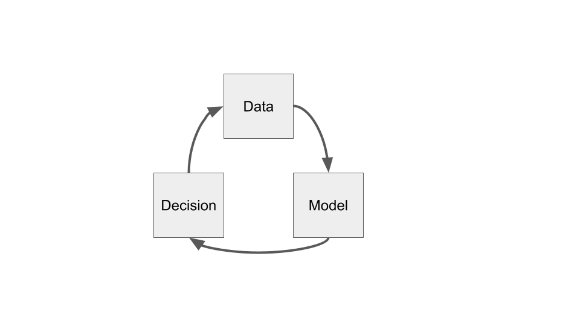

1. Introduction¶
This course broadly approaches the issue of fairness in algorithmic decision making for the practicing data scientists. We emphasize reasoning about data-driven (algorithmic) decision making and its interaction with society. This ability to reason helps the data science practitioner engage in productive discussion with those their models affect, ultimately resulting in more people benefiting from the work.
One increasingly popular approach to studying fairness in the application of statistical models to algorithmic decision making is to fix an observable, quantitative notion of fairness and treat that quantity as a constraint to include when fitting the model. This approach intends to ‘fix’ algorithmic bias. While such observational notions of fairness are useful for identifying differences between groups in collected data, it misses much: Who is missing from the data? Why do such differences exist? Are there other groups that need simultaneous consideration? Are there other notions of fairness that need simultaneous consideration? Is how the model’s output used fair? The course aims to empower the data scientist to holistically discuss their data-driven systems and how it interacts with the populace it affects. This way, the data scientist can represent their work and how it’s used in the public sphere – and do their best for their fellow human beings.
The topics covered in the course consist of:
An overview of concepts related to fairness (such as equality, justice, bias, and discrimination) and the contexts under which those concepts are considered (such as legal or social).
Discussion of measurement and data collection and its relationship to concepts of power.
Approaches to identifying existing (various notions of) inequity in data, while probing the limits to these approaches. Such approaches include using parity measures for measuring discrepancies across groups, causal models, and individual comparisons.
A close examination of how unfairness may appear across a typical machine learning pipeline.
Understanding ways in which the decision making process transforms a model into a generative process with long term effects like feedback loops. 6 Applying the analysis of feedback loops to matching in online markets (Ad serving, gig economy, recommendations).
Approaching the problem of fairness in “decision agnostic” models that are later used in unforeseen ways (e.g. vector embedding, 3rd party APIs).
1.1. Decisions informed by data¶
What is algorithmic decision making? In practice, it’s an automated scheme for making decisions using data. Policy makers, with help from researchers in the social sciences, humanities, and sciences, have been making decisions informed by data for centuries. Thus, in order to study fairness in algorithmic decision making, we should first examine how people make decisions informed by data and the ways in which those decisions affect the fairness of the outcomes.
The first half of the course studies frameworks for understanding concepts related to fairness, identifying inequities in data, and examining when those inequities may have resulted from policy decisions. We will draw on work from Philosophy, Sociology, Economics, and Computer Science. While identifying and explaining inequity in observed data is more general than the study of fairness in algorithmic decisions, it’s a necessary first step before going on to examine the added dynamics that algorithmic decisions bring to the problem.
The ability of a data scientist to surface inequities in the data they study is not only necessary for understanding the consequences of their (algorithmic) decisions, it’s also a super-power waiting to be used for good. Such studies raise awareness of inequities, help build movements demanding change, and aid your fellow humans in bettoring their lives.
1.1.1. Algorithmic decisions¶
What is the difference between an algorithmic decision and a traditional decision?
An algorithm is merely a set of rules used to calculate some output. As such, unfair treatment by a decision making algorithm simply codifies unfairness present in the logic used to define the algorithm. The algorithmic component enables such unfair treatment to scale to larger groups of people.
One example of a biased algorithm from 1934 (predating computers) is redlining in the United States. The Federal Housing Administration (FHA) issued guidelines for issuing mortgages based on place of residence. This process was algorithmic in that the FHA created maps of cities that classified neighborhoods by ‘estimated riskiness’ of mortgage loans and distributed them to lending organizations as guidelines for making loaning decisions. These risk scores largely reflected a loan applicant’s race and broadly enforced discriminatory practices that encouraged country-wide racial segregation and urban neglect. Eighty-five years later, the United States still suffers from the consequences of this racist policy and still disagrees with how to deal with its aftermath. (Learn more about redlining here: [Gro17]).
So what is new then, about algorithmic decision making?
With the proliferation of computers into our lives, algorithms are responsible for making more of our daily decisions and the logic behind those decisions are becoming increasingly complicated. Moreover, when confronted with such opacity behind algorithmic decisions, people tend to assume that the decision is objective and correct.
1.1.1.1. Example: fingerprint unlock¶
Americans unlock their phones 52 times per day on average [Del18]. One feature that software companies developed to ease the friction of phone usage, while maintaining the security of users, is the allowing users to unlock their phone with a fingerprint. Users who do heavy work with their hands noticed that this feature didn’t work reliably [spinedoc7714].
How was this decision making feature designed?
From the designer’s perspective, given a fingerprint, the phone must decide whether it matches a stored fingerprint well enough to decide to unlock the phone. The quantitative threshold for “close enough to match” depends on how fingerprints are quantitatively compared and calibrated using a sample of collected fingerprint data.
How is this fingerprint feature unfair?
The fingerprint unlock was rendered unusable to those who make heavy use of their hands, a large group of potential users with lower incomes on average.
How did this bias occur?
On the one hand, the dataset used to calibrate the algorithm likely came from a sample of existing smart phone users, a demographic that does not skew toward employment in manual labor. Thus, it was “good enough to use” as soon as it passed muster for a specific group.
On the other hand, one could make the argument that making decisions based on worn fingers is a harder problem to solve than for uncallused fingers. In this case, you might ask why the designers felt that this was the best feature to introduce to solve this problem in the first place. This example brings up the value of the diversity of perspectives during idea development and design.
What are the effects and impacts of this design?
Although the impact of a single mistaken decision of unlocking the phone is small, the high frequency of the occurence adds up.
One group leads a frictionless technological life, complete with same-day free shipping, while the other constantly struggles with life’s small difficulties (on top of their larger struggles, which likely placed them in this group to begin with).
From perspective of security-policy, studies show that such friction drastically increase the likelihood that a phone user forgoes security measures all-together. Thus, on a group-level, the unfairness of the design of this feature also leaves those in this disadvantaged group more exposed to bad actors.
Lastly, this bias also has negative impact on the software company. Testing the quality of the feature on the phone’s current user-base ensures that the feature is useful for the company’s current customers. However, the mobile phone business cares about growth; neglecting to consider a large segment of the population as potential customers is bad for business.
1.1.1.2. Example: Tay the racist chatbot¶
In 2016, Microsoft released a chatbot named Tay as a public experiment in conversational learning in a natural environment. The Tay’s algorithm would tweet back responses to questions on Twitter; these responses were her decisions and she made approximately 6000/hr. These repsonses were created by a large, complicated, NLP model trained on publicly available conversatinal text from the internet, along with what the algorithm ‘learned’ from real-time questions and responses. In less than a day after Tay was released on Twitter, she was commonly tweeting racist, abusive content; Microsoft suspended Tay’s account.

In what ways is this algorithm unfair?
Releasing a state-of-the-art, highly publicized, chatbot that streams invective both directs harm at the individuals with whom she converses, as well as amplifies harmful, racist tropes among the public.
How did this bias occur?
There’s some possibility that Tay learned some of these insults from the data on which the model was trained (public text from the internet includes content like this). However, most of this language was taught to the chatbot in real-time, interacting with twitter users who actively their hate to Tay. This sort of rapid, uncontrolled feedback from the chatbot’s environment is a common problem associated to the speed and scale of algorithmic decision making.
Read more about Tay here: [Sch19].
Another difference the ‘algorithmic’ adds to decision making is the potential for exhaustive record-keeping and careful scrutiny. The infrastructure required for algorithmic decision making is the same infrastructure needed to collect the records for informing and auditing those decisions [KLMS19]. This aspiration does not come automatically; it demands a respect for the effects a biased system may have and effort to use that information to improve the world.
1.2. Uses of algorithmic decisions¶
While the encoding of fairness in the models and logic that inform decision making algorithms receive scrutiny, the decisions themselves are often passed off as others problem. Data merely informs a decsision; what that decision is requires just as much care.
The sorts of decisions made by algorithms studied in this course largely fall into two categories: allocative and representational.
Allocative decisions determine whether or not to allocate resources or opportunities of its subjects.
Representational decisions surface the most relevant features of its subject and returns that representation.
Note
The use of ‘allocative’ and ‘representational’ here is nonstandard; these terms are typically used to categorize the kinds of harms an algorithm inflicts. I think this perspective is useful, as it naturally asks what the ideal outcome of such a decision might be.
1.3. Allocative decisions¶
The allocation of scarce resources is the central problem studied in Economics and has been studied for as long as nation states have existed. In the growing literature of fairness and algorithmic decision making, the study of allocative decisions compose the bulk of the research. These decisions include high impact decisions of how to allocate government resources and whether to grant someone their freedom.
We will examine case-studies of different allocative algorithms throughout the course. Below is a list of examples that illustrate the breadth of such decisions:
Criminal justice (granting bail, granting parole, sentencing, crime prediction)
Human resources (screening for hiring, school admissions, promotion)
The serving of online advertisments
Loan granting (loan calculation, credit scoring, mortgage lending)
Fraud and abuse detection (suspensions on social networks)
Prioritization of medical services (access to medicines and procedures, triage)
In many of these examples, algorithms have the opportunity to improve current policies that mistreat underserved communities. However, this takes thoughtfulness and care by those designing the system, and meaningful participation of all the communities it aims to serve.
Note
If some of these don’t seem like they allocate concrete resources, that’s because they may allocate opportunities, or other assets with measurable utility. We will discuss in the next lecture.
1.4. Representational decisions¶
Representational algorithms summarize a concept or individual in service of a question or task. The most common example of representational algorithms are those related to information retrieval and recommender systems. For example, given a search term, the algorithms must decide what the most relevant information is related to that term (what information ‘represents’ the term).
Such algorithms include:
(Textual) search engines
Autocomplete
Image search
Language translation
Generative language models (like Tay the chatbot)
Recommender Systems
Information feeds (Facebook Timeline, Twitter Feed)
Such algorithms influence users’ access to information and shape public discource.
1.5. Judging the quality of a decision¶
Ideally, behind every algorithmic decision making system is a developer that analyzes the quality of the decisions. For model-based decisions, a data scientist will curate a test-set and determine the performance of the model – metrics like accuracy, precision, and recall. Such analyses will approximate the average quality of the decisions before the developer deploys the system.
While the data scientist has incentives to do this analysis well, there are serious shortcomings to such a cursory analysis:
The primary metric used to evaluate performance likely reflects the business’ bottom-line. Are there other metrics that measure real-life impact on users?
Performance metrics typically measure average model quality. Do poor decisions have outsized impact on specific individuals or smaller groups of users? What is the worst case scenario of a poor decision? Is the decision even worth making at all?
Are certain groups of users more poorly served by the model than most? Is the poor performance random or systematically biased to certain groups of users?
Answering all these questions not on helps develop a fairer decision making algorithm, but a better one as well. To help guide such analyses, researchers are developing reporting tools for auditing modeling pipelines [GMV+18,MWZ+18]. However, these tools merely structure an investigation; the developer must still think through the process.
The next chapter will examine different frameworks for understanding model quality and sociotechnical systems, beginning with long-studied topics of fairness, equality, and justice.
1.5.1. Context: who is judging the quality?¶
Another thing to consider is the context under which the decisions occur. Are there legal implications to the decisions? There are precise notions of fairness in law (e.g. disparate impact) that may differ from public opinion. The consequences of running afoul of these notions will also be quite different: breaking the law may lead to prosecution, whereas releasing an unfair algorithm in the eyes of the public may lead to a boycott of your product.
1.6. The machine learning pipeline¶
The second half of the course focuses on ways in which bias and unfairness manifests itself in a decision making system: how it propogates it, creates it, and possibly amplifies it.
A simplified schematic of a data-driven algorithmic decision making pipeline looks like this:

Bias and unfairness can influence this pipeline at any step, as it’s informed by data measured by humans and designed by human developers, each of which is influenced by its own biases.
At the data step:
Does the data represent the correct population?
Does the data capture existing biases and power structures?
Do measurements in the data capture what’s needed to make decision?
Moving from the data step to model step:
Does the data cleaning introduce bias?
Are missing values and imputation affecting the data?
Is data being aggregated in ways that erases needed information for subpopulations? (E.g. Simpson’s Paradox).
At the model step:
Does the label capture true outcomes or biased proxies?
Is the loss function reflect what you are trying to optimize?
When choosing bias over variance, does that bias affect certain subpopulations over others?
Moving from the model step to decision step:
Does the calibration of the model output treat individuals fairly?
Do certain model outcomes (e.g. false positives/negatives) affect the decisions differently?
At the decision step:
Is the decision itself ethical and fair? What if the decision is wrong?
Are the decisions being interpreted and used correctly?
Can those affected by the decisions ‘contest’ the decision in some way?
Moving from the decision step to the data step:
How do decisions affect later models? Are certain groups more likely to experience poor decisions in later models?
If the decisions only capture partial ground truth, is this introducing bias in future labels?